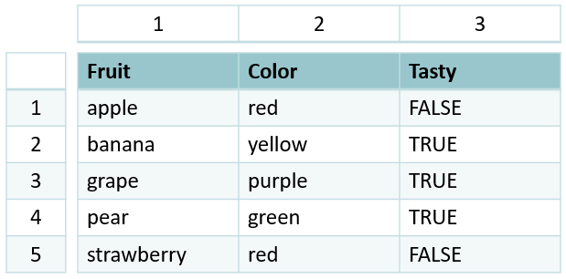

5 Subset Data
5.1 Basic Setup
The first step when working with data is almost always loading the relevant packages and importing it. One of the most important ones for this task is tidyverse, which we learned about yesterday. We’ll import it here:
Next, we read in the data. As we learned yesterday, since I’m in a project, I can use relative file paths for import:
df_wq <- read_csv('data/WQ_P8D7.csv')As a reminder, we can use head to check what our data looks like:
head(df_wq)# A tibble: 6 × 20
Station Date Chla Pheophytin TotAlkalinity DissAmmonia
<chr> <date> <dbl> <dbl> <dbl> <dbl>
1 P8 2020-01-16 0.64 0.5 98 0.15
2 D7 2020-01-22 0.67 0.87 82 0.21
3 P8 2020-02-14 1.46 0.69 81 0.25
4 D7 2020-02-20 2.15 0.5 86 0.14
5 P8 2020-03-03 1.4 0.56 80 0.11
6 D7 2020-03-06 1.89 1.13 93 0.22
# ℹ 14 more variables: DissNitrateNitrite <dbl>, DOC <dbl>, TOC <dbl>,
# DON <dbl>, TotPhos <dbl>, DissOrthophos <dbl>, TDS <dbl>, TSS <dbl>,
# TKN <dbl>, Depth <dbl>, Secchi <dbl>, Microcystis <dbl>,
# SpCndSurface <dbl>, WTSurface <dbl>5.2 Data Structure
Let’s talk a bit about the structure of a data frame. Data frames are 2-dimensional objects (row x column).

Note that, on the far-left side, there is a column of numbers separate from the data frame itself. This is called the row index. Similarly, every column has its own column index. Combined, this means every entry in a data frame has a unique, 2-dimensional index that’s defined by which row x column it’s in.
In R, the syntax for this is [row, column]. (Note that square brackets [ ] are used almost exclusively for indexing objects).
Since we rarely want to work on the entire data frame at once, we can use these indices to subset our data.
5.3 Basic Subsetting
For example, if I want to look at the value in the 1st row of the 2nd column, I can call the index [1,2]:
df_wq[1,2]# A tibble: 1 × 1
Date
<date>
1 2020-01-16or, perhaps, the 2nd row of the 1st column:
df_wq[2,1]# A tibble: 1 × 1
Station
<chr>
1 D7 We can also access an entire row or column at once:
df_wq[1,] # entire row# A tibble: 1 × 20
Station Date Chla Pheophytin TotAlkalinity DissAmmonia
<chr> <date> <dbl> <dbl> <dbl> <dbl>
1 P8 2020-01-16 0.64 0.5 98 0.15
# ℹ 14 more variables: DissNitrateNitrite <dbl>, DOC <dbl>, TOC <dbl>,
# DON <dbl>, TotPhos <dbl>, DissOrthophos <dbl>, TDS <dbl>, TSS <dbl>,
# TKN <dbl>, Depth <dbl>, Secchi <dbl>, Microcystis <dbl>,
# SpCndSurface <dbl>, WTSurface <dbl>df_wq[,1] # entire column# A tibble: 62 × 1
Station
<chr>
1 P8
2 D7
3 P8
4 D7
5 P8
6 D7
7 P8
8 D7
9 P8
10 D7
# ℹ 52 more rowsYou can also subset multiple columns/rows at once by using a : , which generates a sequence from the first value to the second value:
# A tibble: 6 × 3
Date Chla Pheophytin
<date> <dbl> <dbl>
1 2020-01-16 0.64 0.5
2 2020-01-22 0.67 0.87
3 2020-02-14 1.46 0.69
4 2020-02-20 2.15 0.5
5 2020-03-03 1.4 0.56
6 2020-03-06 1.89 1.135.3.1 Exercise
Try to subset the 1st-2nd row and 3rd-4th column.
Code
df_wq[1:2,3:4]You’ll notice I used some new syntax, namely, the %>%. This is called the pipe operator. Operators are functions that allows one to perform operations on other functions/variables. The : operator, for example, is a function that operates on a vector to generates a sequence. The pipe operator, specifically, is a function that allows you to chain together tidyverse commands. Using pipes helps keep code readable and easy to follow.
5.4 Subset by Column Names
To ability to subset is very powerful. However, if we specify values by their numerical index, we can get confused about what we’re accessing. For example, if I wanted to work with DissAmmonia data, I would have to know that it’s the 4th column in my data frame. That can get unwieldy with complex datasets.
Instead, we can use the column header to call a particular column:
# A tibble: 6 × 1
DissAmmonia
<dbl>
1 0.15
2 0.21
3 0.25
4 0.14
5 0.11
6 0.22This returns a tibble that only contains the relevant column.
str(df_wq['DissAmmonia'])tibble [62 × 1] (S3: tbl_df/tbl/data.frame)
$ DissAmmonia: num [1:62] 0.15 0.21 0.25 0.14 0.11 0.22 0.05 0.05 0.05 0.05 ...We can also call the column as a vector using the $ operator; this is the more common syntax.
(Note: if your column name has spaces, surround the column name in back ticks ``)
[1] 0.15 0.21 0.25 0.14 0.11 0.22[1] 0.15 0.21 0.25 0.14 0.11 0.22str(df_wq$DissAmmonia) num [1:62] 0.15 0.21 0.25 0.14 0.11 0.22 0.05 0.05 0.05 0.05 ...To select multiple columns by name, we use the : operator within the select function from the dplyr package (in tidyverse):
# A tibble: 6 × 4
Station Date Chla Pheophytin
<chr> <date> <dbl> <dbl>
1 P8 2020-01-16 0.64 0.5
2 D7 2020-01-22 0.67 0.87
3 P8 2020-02-14 1.46 0.69
4 D7 2020-02-20 2.15 0.5
5 P8 2020-03-03 1.4 0.56
6 D7 2020-03-06 1.89 1.13If this is the only data I want to work with, I can store this as a unique object:
glimpse(df_chlpheo)Rows: 62
Columns: 4
$ Station <chr> "P8", "D7", "P8", "D7", "P8", "D7", "P8", "D7", "P8", "D7",…
$ Date <date> 2020-01-16, 2020-01-22, 2020-02-14, 2020-02-20, 2020-03-03…
$ Chla <dbl> 0.64, 0.67, 1.46, 2.15, 1.40, 1.89, 4.73, 1.74, 6.40, 2.79,…
$ Pheophytin <dbl> 0.50, 0.87, 0.69, 0.50, 0.56, 1.13, 1.25, 0.89, 0.88, 0.85,…We can also select specific columns by using a vector:
5.5 Subset By Row Values
Another common goal is to subset by particular row values – say, only a given station, date range, or analyte value range. Tidyverse also has functions for this! Specifically, we use filter from the dplyr package:
# A tibble: 6 × 20
Station Date Chla Pheophytin TotAlkalinity DissAmmonia
<chr> <date> <dbl> <dbl> <dbl> <dbl>
1 P8 2020-01-16 0.64 0.5 98 0.15
2 P8 2020-02-14 1.46 0.69 81 0.25
3 P8 2020-03-03 1.4 0.56 80 0.11
4 P8 2020-06-11 4.73 1.25 59 0.05
5 P8 2020-07-13 6.4 0.88 63 0.05
6 P8 2020-08-11 16.5 1.41 65 0.05
# ℹ 14 more variables: DissNitrateNitrite <dbl>, DOC <dbl>, TOC <dbl>,
# DON <dbl>, TotPhos <dbl>, DissOrthophos <dbl>, TDS <dbl>, TSS <dbl>,
# TKN <dbl>, Depth <dbl>, Secchi <dbl>, Microcystis <dbl>,
# SpCndSurface <dbl>, WTSurface <dbl>To check that this code worked correctly, we can look at all the unique values in the Station column using the unique function:
unique(df_p8$Station)[1] "P8"5.6 Logical Operators
Note we used another new symbol: ==. This is the equality operator, a type of logical operator.
We defined operators above as functions that perform operations on other functions/variables. It follows, then, that logical operators perform operators based on logical statements! Logical statements are the backbone of programming. Every single coding task (including every single function) can, at its core, be broken down into logical statements.
Therefore, if you’re stuck on a coding task, try to reword it as a series of logical statements! That way, when you Google your questions (or put them into ChatGPT), you’ll get better and more precise answers.
Example:
“I want all of the data in df_wq where the Station is P8”
becomes
“given df_wq , if the value in the Station column equals P8, return TRUE (keep the value)”
When we use logical operators, how does the code know what values should be kept?
Logical statements return a special type of output, called boolean. Boolean can only have one of two values: TRUE or FALSE. Other functions, like subsetting with [], can use this output to determine which values to keep.
5 == 5[1] TRUE5 == 6[1] FALSELet’s talk about some specific operators:
5.6.1 equality (==) and negate equality (!=)
Equality, as we saw above, tells the code to find all values from the right-hand side that are equal to the left-hand side.
# A tibble: 6 × 20
Station Date Chla Pheophytin TotAlkalinity DissAmmonia
<chr> <date> <dbl> <dbl> <dbl> <dbl>
1 P8 2020-01-16 0.64 0.5 98 0.15
2 P8 2020-02-14 1.46 0.69 81 0.25
3 P8 2020-03-03 1.4 0.56 80 0.11
4 P8 2020-06-11 4.73 1.25 59 0.05
5 P8 2020-07-13 6.4 0.88 63 0.05
6 P8 2020-08-11 16.5 1.41 65 0.05
# ℹ 14 more variables: DissNitrateNitrite <dbl>, DOC <dbl>, TOC <dbl>,
# DON <dbl>, TotPhos <dbl>, DissOrthophos <dbl>, TDS <dbl>, TSS <dbl>,
# TKN <dbl>, Depth <dbl>, Secchi <dbl>, Microcystis <dbl>,
# SpCndSurface <dbl>, WTSurface <dbl>Negate equality does the opposite; it gives us the values that do not match. It’s actually a combination of two operators: negate (!) and equality (==). ! is the general negate operator; it can be applied to any logical operator.
# A tibble: 6 × 20
Station Date Chla Pheophytin TotAlkalinity DissAmmonia
<chr> <date> <dbl> <dbl> <dbl> <dbl>
1 D7 2020-01-22 0.67 0.87 82 0.21
2 D7 2020-02-20 2.15 0.5 86 0.14
3 D7 2020-03-06 1.89 1.13 93 0.22
4 D7 2020-06-17 1.74 0.89 78 0.05
5 D7 2020-07-16 2.79 0.85 80 0.05
6 D7 2020-08-17 0.5 6.13 83 0.05
# ℹ 14 more variables: DissNitrateNitrite <dbl>, DOC <dbl>, TOC <dbl>,
# DON <dbl>, TotPhos <dbl>, DissOrthophos <dbl>, TDS <dbl>, TSS <dbl>,
# TKN <dbl>, Depth <dbl>, Secchi <dbl>, Microcystis <dbl>,
# SpCndSurface <dbl>, WTSurface <dbl>
5.6.2 and (&) and or (|)
Sometimes, we want to filter by multiple commands at once. We can use this using the logical operators and (&) or or (|):
# A tibble: 1 × 20
Station Date Chla Pheophytin TotAlkalinity DissAmmonia
<chr> <date> <dbl> <dbl> <dbl> <dbl>
1 P8 2020-01-16 0.64 0.5 98 0.15
# ℹ 14 more variables: DissNitrateNitrite <dbl>, DOC <dbl>, TOC <dbl>,
# DON <dbl>, TotPhos <dbl>, DissOrthophos <dbl>, TDS <dbl>, TSS <dbl>,
# TKN <dbl>, Depth <dbl>, Secchi <dbl>, Microcystis <dbl>,
# SpCndSurface <dbl>, WTSurface <dbl># A tibble: 2 × 20
Station Date Chla Pheophytin TotAlkalinity DissAmmonia
<chr> <date> <dbl> <dbl> <dbl> <dbl>
1 P8 2020-01-16 0.64 0.5 98 0.15
2 D7 2020-01-22 0.67 0.87 82 0.21
# ℹ 14 more variables: DissNitrateNitrite <dbl>, DOC <dbl>, TOC <dbl>,
# DON <dbl>, TotPhos <dbl>, DissOrthophos <dbl>, TDS <dbl>, TSS <dbl>,
# TKN <dbl>, Depth <dbl>, Secchi <dbl>, Microcystis <dbl>,
# SpCndSurface <dbl>, WTSurface <dbl>
5.6.3 less than < and greater than >
Sometimes, we want all values above or below; we can use less/greater than (< and >) for this task. Similarly, we can use “less/greater than or equal to” (<= and >=)
# A tibble: 60 × 20
Station Date Chla Pheophytin TotAlkalinity DissAmmonia
<chr> <date> <dbl> <dbl> <dbl> <dbl>
1 P8 2020-02-14 1.46 0.69 81 0.25
2 D7 2020-02-20 2.15 0.5 86 0.14
3 P8 2020-03-03 1.4 0.56 80 0.11
4 D7 2020-03-06 1.89 1.13 93 0.22
5 P8 2020-06-11 4.73 1.25 59 0.05
6 D7 2020-06-17 1.74 0.89 78 0.05
7 P8 2020-07-13 6.4 0.88 63 0.05
8 D7 2020-07-16 2.79 0.85 80 0.05
9 P8 2020-08-11 16.5 1.41 65 0.05
10 D7 2020-08-17 0.5 6.13 83 0.05
# ℹ 50 more rows
# ℹ 14 more variables: DissNitrateNitrite <dbl>, DOC <dbl>, TOC <dbl>,
# DON <dbl>, TotPhos <dbl>, DissOrthophos <dbl>, TDS <dbl>, TSS <dbl>,
# TKN <dbl>, Depth <dbl>, Secchi <dbl>, Microcystis <dbl>,
# SpCndSurface <dbl>, WTSurface <dbl># A tibble: 8 × 20
Station Date Chla Pheophytin TotAlkalinity DissAmmonia
<chr> <date> <dbl> <dbl> <dbl> <dbl>
1 P8 2020-01-16 0.64 0.5 98 0.15
2 D7 2020-01-22 0.67 0.87 82 0.21
3 P8 2020-02-14 1.46 0.69 81 0.25
4 D7 2020-02-20 2.15 0.5 86 0.14
5 P8 2020-03-03 1.4 0.56 80 0.11
6 D7 2020-03-06 1.89 1.13 93 0.22
7 P8 2020-06-11 4.73 1.25 59 0.05
8 D7 2020-06-17 1.74 0.89 78 0.05
# ℹ 14 more variables: DissNitrateNitrite <dbl>, DOC <dbl>, TOC <dbl>,
# DON <dbl>, TotPhos <dbl>, DissOrthophos <dbl>, TDS <dbl>, TSS <dbl>,
# TKN <dbl>, Depth <dbl>, Secchi <dbl>, Microcystis <dbl>,
# SpCndSurface <dbl>, WTSurface <dbl>At times, it may make more sense to use the negate operator (ie. it’s easier to explain your reasoning that way). When using the negate operator with filter, we negate the entire statement use the syntax below:
# A tibble: 8 × 20
Station Date Chla Pheophytin TotAlkalinity DissAmmonia
<chr> <date> <dbl> <dbl> <dbl> <dbl>
1 P8 2020-01-16 0.64 0.5 98 0.15
2 D7 2020-01-22 0.67 0.87 82 0.21
3 P8 2020-02-14 1.46 0.69 81 0.25
4 D7 2020-02-20 2.15 0.5 86 0.14
5 P8 2020-03-03 1.4 0.56 80 0.11
6 D7 2020-03-06 1.89 1.13 93 0.22
7 P8 2020-06-11 4.73 1.25 59 0.05
8 D7 2020-06-17 1.74 0.89 78 0.05
# ℹ 14 more variables: DissNitrateNitrite <dbl>, DOC <dbl>, TOC <dbl>,
# DON <dbl>, TotPhos <dbl>, DissOrthophos <dbl>, TDS <dbl>, TSS <dbl>,
# TKN <dbl>, Depth <dbl>, Secchi <dbl>, Microcystis <dbl>,
# SpCndSurface <dbl>, WTSurface <dbl>What if we want data in between two dates? We can use the & operator!
# A tibble: 6 × 20
Station Date Chla Pheophytin TotAlkalinity DissAmmonia
<chr> <date> <dbl> <dbl> <dbl> <dbl>
1 P8 2020-02-14 1.46 0.69 81 0.25
2 D7 2020-02-20 2.15 0.5 86 0.14
3 P8 2020-03-03 1.4 0.56 80 0.11
4 D7 2020-03-06 1.89 1.13 93 0.22
5 P8 2020-06-11 4.73 1.25 59 0.05
6 D7 2020-06-17 1.74 0.89 78 0.05
# ℹ 14 more variables: DissNitrateNitrite <dbl>, DOC <dbl>, TOC <dbl>,
# DON <dbl>, TotPhos <dbl>, DissOrthophos <dbl>, TDS <dbl>, TSS <dbl>,
# TKN <dbl>, Depth <dbl>, Secchi <dbl>, Microcystis <dbl>,
# SpCndSurface <dbl>, WTSurface <dbl>
5.6.4 in (%in%)
What if we wanted to subset by five specific dates? We could string together multiple | commands, but that can become unwieldy to write.
What if, instead, we had a vector of those five specific dates? Then we could subset by all the values in the data that match one of the values in that vector.
This is what the %in% function does:
# A tibble: 5 × 20
Station Date Chla Pheophytin TotAlkalinity DissAmmonia
<chr> <date> <dbl> <dbl> <dbl> <dbl>
1 P8 2020-02-14 1.46 0.69 81 0.25
2 D7 2020-03-06 1.89 1.13 93 0.22
3 P8 2020-06-11 4.73 1.25 59 0.05
4 P8 2021-03-05 1.56 0.5 103 0.299
5 P8 2021-04-05 2.62 1.1 116 0.063
# ℹ 14 more variables: DissNitrateNitrite <dbl>, DOC <dbl>, TOC <dbl>,
# DON <dbl>, TotPhos <dbl>, DissOrthophos <dbl>, TDS <dbl>, TSS <dbl>,
# TKN <dbl>, Depth <dbl>, Secchi <dbl>, Microcystis <dbl>,
# SpCndSurface <dbl>, WTSurface <dbl>5.6.5 Exercise
In one filter function, how would I select data that’s either before 2020-02-28 or after 2022-11-01?
5.7 Subset by Column and Row
Using our knowledge of pipes, it’s easy to subset by column and row at the same time!
# A tibble: 2 × 4
Station Date Chla Pheophytin
<chr> <date> <dbl> <dbl>
1 P8 2020-01-16 0.64 0.5
2 D7 2020-01-22 0.67 0.87Notice that above all the code is on the same line. This can be difficult to read. You can get around this by formatting your code. Personally, I like having different functions on different lines:
You can also use ctrl+shift+A to auto-format code! Note that it looks different from above; this is fine. As long as you deem the code readable (and it works), you’re set.
5.8 Subset NA
The final type of subset that we’ll cover is by NA data.
NA is a logical constant of length 1 which contains a missing value indicator:
Sometimes, we want to select only NA data or omit it entirely. Looking at the DON column, we see that there are NAs:
unique(df_wq$DON) # returns unique values [1] NA 0.30 0.20 0.10 0.50 0.22 0.19 0.11 0.53 0.13 0.46 0.25 0.37 0.29 0.17
[16] 0.24 0.27 0.21 0.35 0.12 0.18 0.16 1.07 0.33 0.40 0.44 0.43 0.42 0.38A quicker way to check this is the is.na function:
This returns a logical vector. If I want to subset by this, I can use the filter function:
# A tibble: 6 × 3
Station Date DON
<chr> <date> <dbl>
1 P8 2020-01-16 NA
2 D7 2020-01-22 NA
3 P8 2020-02-14 NA
4 D7 2020-02-20 NA
5 P8 2020-03-03 NA
6 D7 2020-03-06 NAQuestion: What operator would I use if I want to filter all data except NAs?
5.8.1 Exercise
How would I write this statement? (Hint: examples are above)
5.9 Subset by Dates
Dates can be very complicated in R. One common issue is that date formats can display differently from the same file! Here’s an example:
df_dash_dates <- read_csv('data/WQ_P8D7.csv', show_col_types = FALSE) %>%
select(Date) %>%
head()
df_slash_dates <- read_csv('data/WQ_P8D7_moddates.csv', show_col_types = FALSE) %>%
select(Date) %>%
head()
df_dash_dates# A tibble: 6 × 1
Date
<date>
1 2020-01-16
2 2020-01-22
3 2020-02-14
4 2020-02-20
5 2020-03-03
6 2020-03-06df_slash_dates# A tibble: 6 × 1
Date
<chr>
1 1/16/2020
2 1/22/2020
3 2/14/2020
4 2/20/2020
5 3/3/2020
6 3/6/2020 What happened? In this case, it’s an issue of opening the file in Excel and saving it. When you do this, Excel can change the date format without you even knowing. One workaround for this issue to use the parse_date_time function; we will go into this in more detail on Day 4.
The format Year-Month-Day is the “correct” Date format in R (with a 4 digit year). So how do we convert? There are many ways, but one is using the as.Date function in R, which can be nested in the mutate function.
To do this, we need to specify the format the other date is in.This is done using something called “format codes” that represent parts of the date and time. These codes must match the structure of your data, including any separators like slashes, dashes, or spaces.
A cheat sheet for format codes:
-
%Y: year (4 digit) – 2005 -
%y: year (2 digit) – 05 -
%m: month (numeric) – 01 -
%B: month (full name) – January -
%b: month (abbreviation) – Jan -
%d: day -
%H: hour -
%M: minute -
%S: second
An example:
test_date <- '04/05/2021'
new_date <- as.Date(test_date, format = '%m/%d/%Y')
new_date[1] "2021-04-05"class(new_date)[1] "Date"5.9.1 Exercise
Convert April 5 2021 to a date character
test_date2 <- 'April 5 2021'
as.Date(test_date2, format = '%B %d %Y')[1] "2021-04-05"What if I want to subset all values in a given year? If I had a vector of all the years in my dataset, then I could simply use %in% (or, if there’s only one year, ==)! But how would I get that vector?
The lubridate package allows you to manipulate dates. Since dates are complicated in R, we won’t go into too much detail. However, a few useful functions are day, month, and year, which return the days, months, and years (as vectors) from a vector of dates that are of the Date class:
Original:
[1] "2020-01-16" "2020-01-22" "2020-02-14" "2020-02-20" "2020-03-03"
[6] "2020-03-06"class(df_wq$Date) # check that it's the correct class[1] "Date"Days:
day(df_wq$Date) [1] 16 22 14 20 3 6 11 17 13 16 11 17 9 24 8 13 6 12 5 10 5 8 5 10 3
[26] 8 16 21 16 19 10 16 13 18 10 16 10 15 12 14 16 27 27 27 25 22 20 19 18 19
[51] 7 9 11 22 23 22 20 17 15 14 15 14Months:
month(df_wq$Date) [1] 1 1 2 2 3 3 6 6 7 7 8 8 9 9 10 10 11 11 3 3 4 4 5 5 6
[26] 6 7 7 8 8 9 9 10 10 11 11 12 12 1 2 3 4 5 6 7 8 9 10 11 12
[51] 1 2 3 4 5 6 7 8 9 10 11 12Years:
year(df_wq$Date) [1] 2020 2020 2020 2020 2020 2020 2020 2020 2020 2020 2020 2020 2020 2020 2020
[16] 2020 2020 2020 2021 2021 2021 2021 2021 2021 2021 2021 2021 2021 2021 2021
[31] 2021 2021 2021 2021 2021 2021 2021 2021 2022 2022 2022 2022 2022 2022 2022
[46] 2022 2022 2022 2022 2022 2022 2022 2022 2022 2022 2022 2022 2022 2022 2022
[61] 2022 2022One use for these functions is to subset. Say we want all entries from the year 2021:
# A tibble: 6 × 20
Station Date Chla Pheophytin TotAlkalinity DissAmmonia
<chr> <date> <dbl> <dbl> <dbl> <dbl>
1 P8 2021-03-05 1.56 0.5 103 0.299
2 D7 2021-03-10 4.77 0.5 97.9 0.135
3 P8 2021-04-05 2.62 1.1 116 0.063
4 D7 2021-04-08 3.28 0.83 93.9 0.078
5 P8 2021-05-05 4.73 1.48 89.9 0.05
6 D7 2021-05-10 1.85 0.55 100 0.093
# ℹ 14 more variables: DissNitrateNitrite <dbl>, DOC <dbl>, TOC <dbl>,
# DON <dbl>, TotPhos <dbl>, DissOrthophos <dbl>, TDS <dbl>, TSS <dbl>,
# TKN <dbl>, Depth <dbl>, Secchi <dbl>, Microcystis <dbl>,
# SpCndSurface <dbl>, WTSurface <dbl># same thing but using negate (negate the years 2020 and 2022)
df_wq %>% filter(
!(year(Date) %in% c('2020','2022'))
)# A tibble: 20 × 20
Station Date Chla Pheophytin TotAlkalinity DissAmmonia
<chr> <date> <dbl> <dbl> <dbl> <dbl>
1 P8 2021-03-05 1.56 0.5 103 0.299
2 D7 2021-03-10 4.77 0.5 97.9 0.135
3 P8 2021-04-05 2.62 1.1 116 0.063
4 D7 2021-04-08 3.28 0.83 93.9 0.078
5 P8 2021-05-05 4.73 1.48 89.9 0.05
6 D7 2021-05-10 1.85 0.55 100 0.093
7 P8 2021-06-03 4.39 0.5 78.1 0.056
8 D7 2021-06-08 4.21 1.2 96.8 0.058
9 P8 2021-07-16 4.3 2.28 49.2 0.05
10 D7 2021-07-21 6.54 1.15 93.4 0.05
11 P8 2021-08-16 5.56 1.2 46.4 0.05
12 D7 2021-08-19 6.76 4.03 91.1 0.05
13 P8 2021-09-10 3.85 1.22 57.5 0.069
14 D7 2021-09-16 2.74 1.32 91.5 0.05
15 P8 2021-10-13 1.97 0.57 74.9 0.069
16 D7 2021-10-18 2.95 2.86 94.9 0.073
17 P8 2021-11-10 1.25 0.92 59.8 0.118
18 D7 2021-11-16 1.52 1.38 85.6 0.186
19 P8 2021-12-10 1.52 0.7 79.4 0.09
20 D7 2021-12-15 1.17 1.55 91.5 0.192
# ℹ 14 more variables: DissNitrateNitrite <dbl>, DOC <dbl>, TOC <dbl>,
# DON <dbl>, TotPhos <dbl>, DissOrthophos <dbl>, TDS <dbl>, TSS <dbl>,
# TKN <dbl>, Depth <dbl>, Secchi <dbl>, Microcystis <dbl>,
# SpCndSurface <dbl>, WTSurface <dbl>5.9.2 Exercise
Subset to only include data from April 2021 (hint: use the & operator)